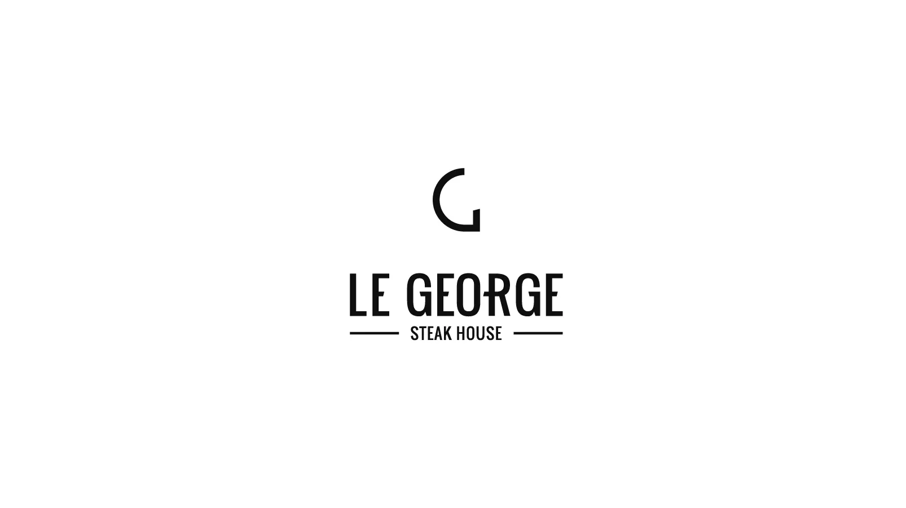
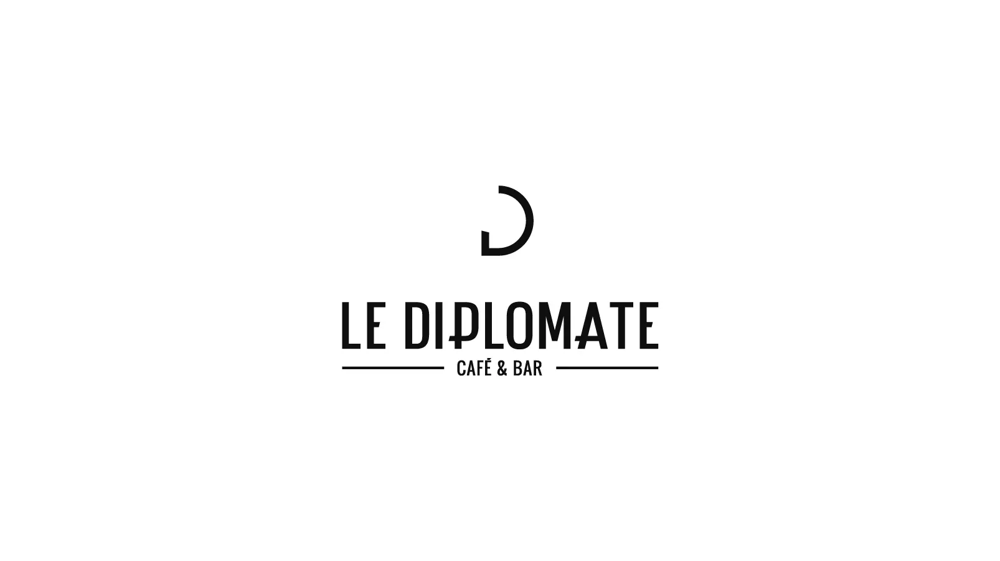
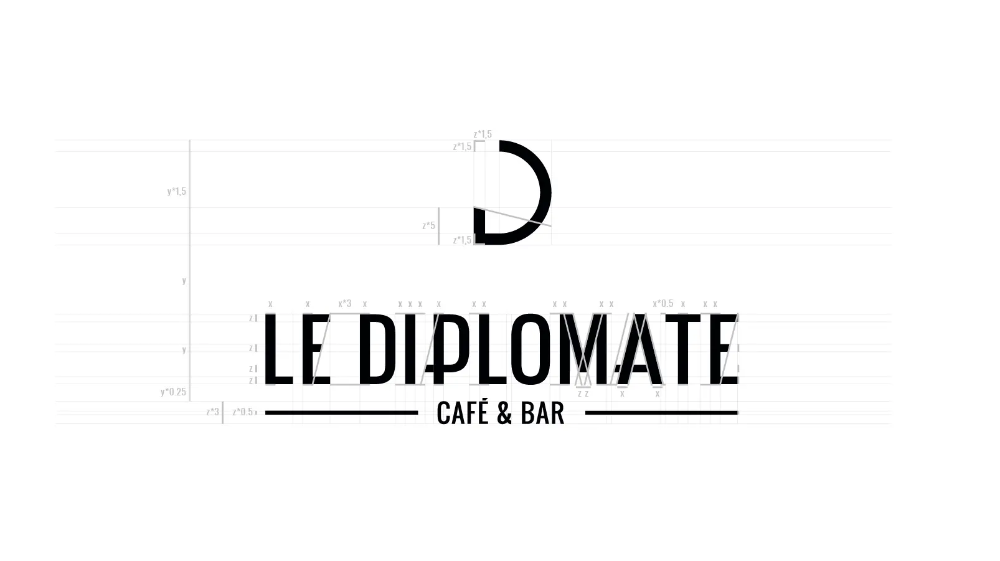
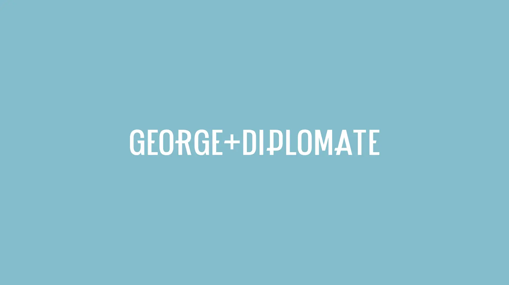
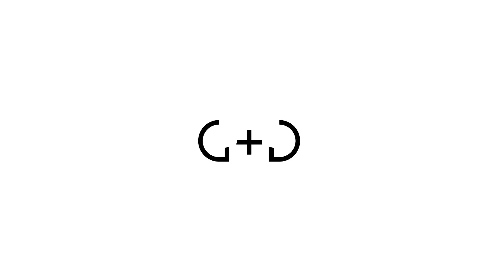
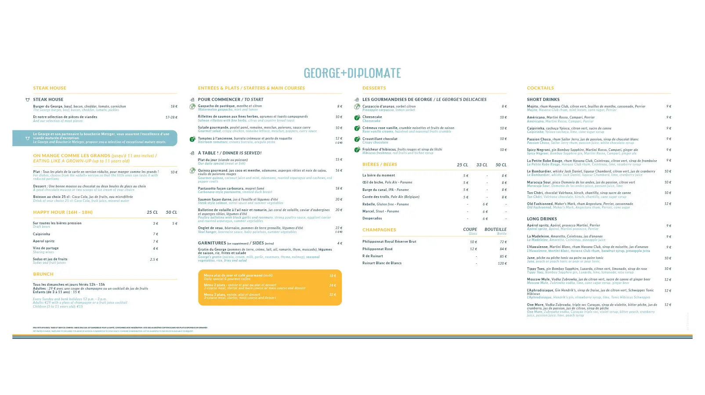
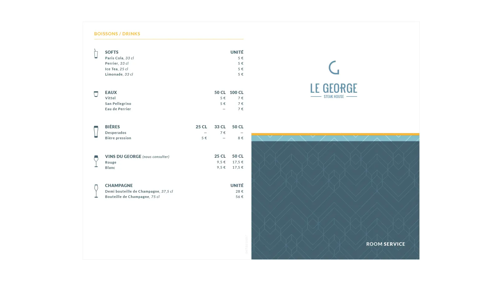

George+Diplomate
Entité de l'hôtel 4 étoiles Élysée Val d'Europe, l'objectif était de créer une identité conjointe pour le bar et le restaurant. Le projet s'est accompagné sur plusieurs années avec la création de la signalétique dans l'hôtel (escaliers, ascenseurs, issues de secours...), des cartes de boissons, des menus, des totems, des affiches, des visuels web pour alimenter les réseaux, des pictogrammes, des cartes de vœux et bien d'autres.
Logos & Charte Graphique
Le projet logo devait regrouper non pas deux, mais trois logos : Le George, Le Diplomate et George+Diplomate. Il fallait bien évidemment rester parfaitement coherent, les trois devaient faire partie d'un tout. Les symboles du G et du D forment une symétrie, ce qui renforce encore plus le lien entre les deux entités.





Carte Totem Extérieure
La carte totem est essentielle, c'est l'un des premiers éléments visible lorsque l'on arrive devant l'hôtel, elle se doit d'être claire, lisible et facile à parcourir.
Cliquez pour ouvrir le fichier PDF (1 page).

Éditions Print & Carte Room Service
Exemple parmi tant d'autres, la carte room service bilingue est dans la lignée graphique du reste de la communication visuelle de l'hôtel.
Cliquez pour ouvrir le fichier PDF (2 pages).
